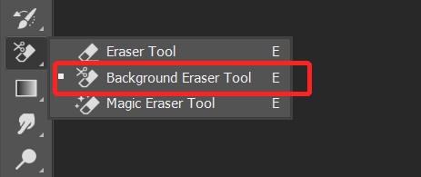
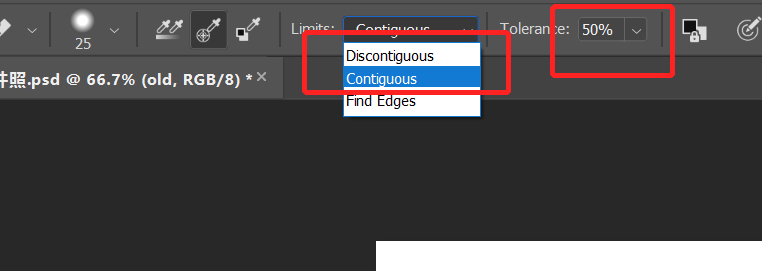
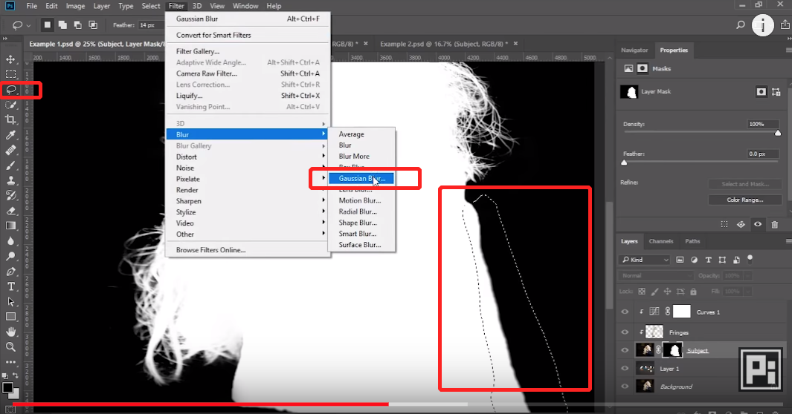

锐化技巧 in Photoshop

图片锐化是常常要进行的处理，但锐化后的图像，往往会在反差较大的边沿处产生很细的亮条，影响整体效果，例如如下图片：
以上图片是简单的使用了锐化工具处理后的结果，要在锐化过程中不带来亮条，可以使用以下步骤处理。
图片锐化是常常要进行的处理，但锐化后的图像，往往会在反差较大的边沿处产生很细的亮条，影响整体效果，例如如下图片：
以上图片是简单的使用了锐化工具处理后的结果，要在锐化过程中不带来亮条，可以使用以下步骤处理。

观察图层主要是用来让我的的处理 focus on 我们需要处理的部分，使要处理的细节更加清晰。
可以建立的观察图层有以下几种：
以下分别介绍几种图层的建立。
人像抠图是经常需要进行的操作，通过新版 Photoshop background erase tool 可以简单处理。
使用背景擦除工具处理头发，上方的设置区域，选择 discontinue:


使用选区工具或者其他选择工具将主体抠出后，常常会发现边沿有锯齿样的过渡，在一些情况下，我们希望边沿平滑，可以配合模糊工具和对比度调整工具可以调整蒙版来使过渡平滑。
选区工具选中边缘，filter - blur - Gaussian blur，选择较大的值：
